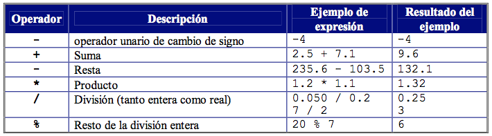

Inicio
1.1. P.O.O.: Programación Orientada a Objetos
La P.O.O. o también llamada programación orientada a objetos es un tipo de programación basada en la descripción de un objeto.
Estos objetos en la programación son entidades que cuentan con diversos atributos y comportamientos. Tambien en esta programación existen las clases que basicamente serían como plantillas, que es donde se instancian los objetos y todos sus atributos y etc.

1.2. Metodología SCRUM
SCRUM, viene de el nombre de un movimiento en el deporte rugby (que traducido seria meleé) es una metodología de trabajo ágil que su principal objetivo es agilizar el trabajo en equipo, puede ser aplicado en casi cualquier ámbito de trabajo donde se requiera trabajo en equipo.
Esta metodología cuenta con roles, cabe recalcar que estos roles no están jerarquizados, es decir, ninguno tiene mayor poder sobre otro. Los roles en esta metodología son los siguientes:
Product Owner: Vendría siendo la cara del producto, es el miembro que se encarga de hablar con el cliente y transmitir lo que este (el cliente) desea para su trabajo al Team, para que se realize, así como llevar la documentación de trabajo, plannings y backlogs.
Scrum Master: Es el encargado de verificar el trabajo del equipo, así como facilitarles información o ayuda de cualquier tipo que estos necesitan en el trabajo que se les fue asignado, también dirige las Daily Meetings, que es una planeación diaria para hacer un recuento de las actividades que se realizarán en un el día de trabajo.
Scrum Team: Son los encargados de realizar el trabajo asignado por el Product Owner.

1.3. Principios SOLID
Presenta cinco principios básicos de la programación orientada a objetos
La S, Single Responsability o el principio de responsabilidad única, nos dice que un objeto debe tener una responsabilidad primordial, es decir, una razón para existir, y la razón debe estar dentro de una clase.
La O de SOLID se corresponde a Open/closed principle, o principio de cierre y apertura, en el que el software debe estar abierto a la extensión, pero cerrado a la modificación. Esto se refiere a que una vez desarrollado el sistema, si es algo necesario agregar código, lo harás escribiendo código nuevo y no cambiando el código que funciona.
La L es para el principio de sustitución de Liskov, o Liskov substitution principle, que dice que las clases derivadas de un programa deben ser sustituibles por las clases base, y todo esto debe realizarse sin alterar la exactitud del programa.
La I, corresponde a Interface segregation principle, o principio de segregación de interfaces. Este nos guía enunciando que muchas interfaces de cliente son mejores que una sola interfaz de propósito general.
La D de Dependency inversion principle, o principio de inversión de la dependencia. Esto qiere decir que no debe apuntarse directamente a objetos en si, sino que debemos crear objetos que hagan frente a las abstracciones con el fin de minimizar las dependencias en los objetos.
1.4. Operadores matemáticos en Java
